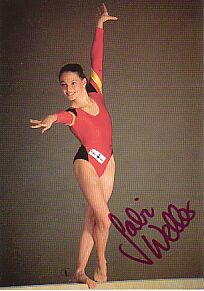

Gabi Weller (GER)
4-Time World Championships Team Member

Gabi was born on February 2, 1976 in Heuchelheim. She began gymnastics at age 6 and loved it from the beginning. A veteran of 4 world championships and 1 Olympics, Gabi left international gymnastics in 1999 following knee surgery.
In 2000, Gabi moved to the USA and attended Towson University in Maryland where she was a member of the gymnastics team. Today she's back in Germany where she's a stuntwoman.
Competition Results
1989
Jr. FRG Championsihps: 2nd AA, 3rd FX
1990
GER Championships: 4th AA, 2nd V
Moscow News: 38th AA
1991
American Cup: 11th AA (prelims)
GER Championships: 11th AA
GER-ROM Dual Meet: 2nd Team, 9th AA
Intl. Mixed Pairs: 13th Team
World Championships: 10th Team, 68th AA (prelims)
1992
GER Championships: 5th AA
GER-GBR Dual Meet: 5th AA
GER Olympic Trials: 2nd AA
GER-ROM Dual Meet: 2nd Team, 12th AA
Olympic Games: 9th Team, 73rd AA (prelims)
World Championships: 14th V (semi-finals), 28th B (prelims), 51st UB
(prelims)
1993
Cottbus International: 8th AA, 2nd V
DTB Cup: 5th V
World Championships: 32nd AA
1995
GER Championships: 11th AA, 4th V
University Games: 14th AA, 7th UB
1996
Cottbus International: 8th UB, 10th V
1997
University Games: 20th AA, 6th V
1999
GER Championships: 4th AA
2000
EAGL Championships: 1st AA, 1st V
2001
World Championships: 8th Team
This page was created on September
03, 2005.
© Gymn Forum